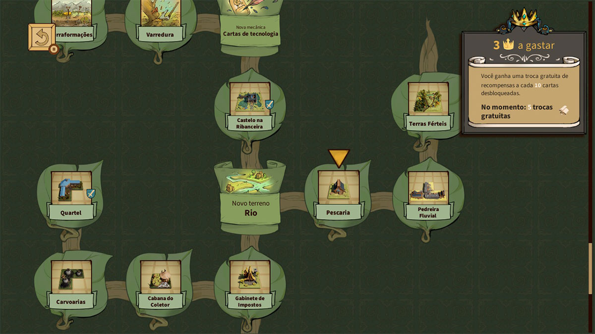
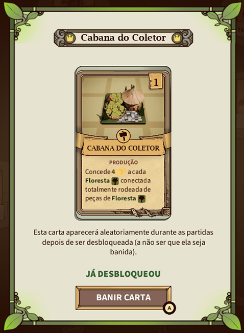
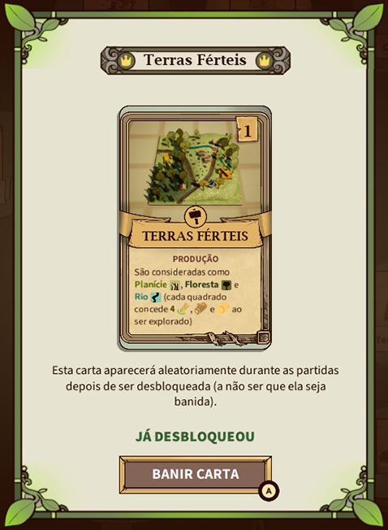

O que esperar de um jogo que mistura Slay the Spire, Civilization e... Tetris? Acredito que essa seja a melhor maneira de definir Drop Duchy.
Antes de conhecer, essa mistura de gêneros pode parecer uma loucura completa (e é rs). Mas na prática, Drop Duchy é um jogo excelente e viciante onde o objetivo primário é encaixar blocos e somar pontos da forma padrão como fazemos em Tetris, mas com uma camada tática que muda completamente as regras do jogo.
O terreno importa: O toque de Civilization
Diferente dos blocos vazios e coloridos dos arcades dos anos 80, aqui as peças que caem do céu são contadas e não somem ao fechar a fileira; além disso, trazem diferentes tipos de terreno, cada um disponibilizando recursos variados entre pedra, comida e madeira. E é aqui que entra o espírito de coleta do Civilization: cada tipo de terreno posicionado no seu tabuleiro concede uma bonificação específica para evoluir o seu exército.
Montar florestas, erguer fortalezas e planejar campos de forma inteligente é o que vai determinar a força das suas tropas, além de garantir a coleta de recursos essenciais para melhorar o seu deck quando a fase de organização acabar.

Cartas por facções: A árvore de tecnologia
A profundidade estratégica se expande com a árvore de tecnologia, que permite liberar cartas exclusivas atreladas a 5 facções jogáveis. Cada escolha muda drasticamente a dinâmica de recursos do seu baralho:
- O ducado: Cartas básicas com forte foco em agricultura, florestas e planícies.
- A república: Cartas baseadas no terreno exclusivo de "vizinhança" e no meticuloso gerenciamento de cidadãos.
- A ordem: Cartas voltadas para mecânicas religiosas e o poderoso acúmulo de fé.
- A tribo: Foca em cartas de círculos de pedra e megálitos para expansão territorial.
- O norte: Com um estilo viking, utiliza mecânicas de risco e o perigoso recurso de fúria.


A preparação e o legado de Slay the Spire
Assim como Slay the Spire, Drop Duchy é aquele tipo de roguelite que te ensina (por bem ou por mal) a aprender com cada tentativa. A principal inspiração fica clara na estrutura das runs, onde conforme você avança e vence os confrontos, o jogo vai liberando cartas inéditas e novas opções na árvore de tecnologia.
O mais legal é que essas cartas vinculadas a facções específicas despertam uma curiosidade enorme, nos incentivando a iniciar uma nova run só para testar um povo diferente. Essa troca muda completamente a dinâmica da partida (sim, em um jogo de Tetris!) e entrega uma experiência totalmente nova e viciante a cada tentativa.
Veredito: Vale a pena jogar?
Se você gosta de jogos casuais mas que testam sua capacidade de adaptação, Drop Duchy é uma ótima pedida. A transição entre o raciocínio espacial acelerado na hora de derrubar as peças e o planejamento calculista do deck cria um ciclo de gameplay em que você sempre diz: "só mais uma partida".
A desenvolvedora conseguiu fundir três mecânicas consagradas em algo que parece totalmente fresco. Prepare seu tabuleiro, gerencie suas terras e monte seu melhor baralho. O seu ducado depende de você.